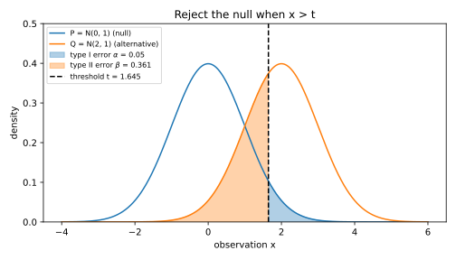
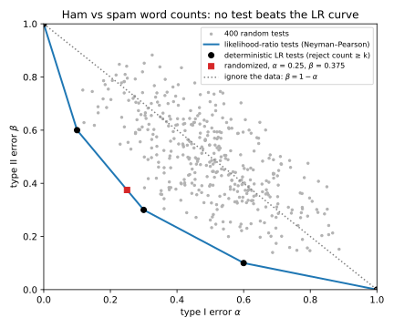
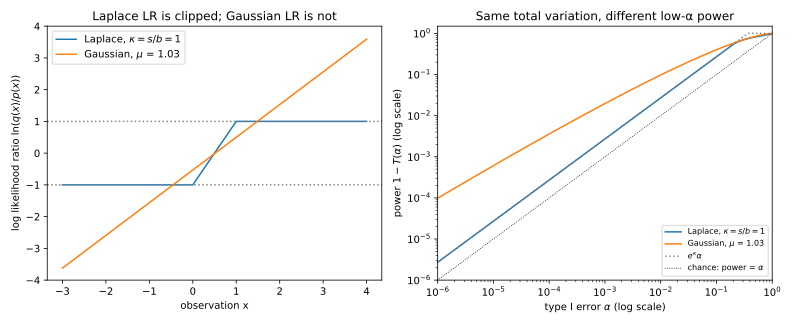
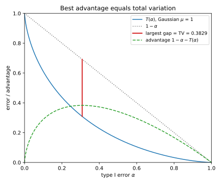
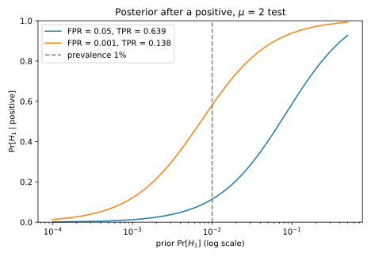

4 Hypothesis testing
4.1 Why this matters
A spam filter reads an email and must say “ham” or “spam”. A fraud detector sees a transaction and must say “normal” or “fraud”. A monitoring job reads a batch of sensor readings and must say whether the sensor has drifted. These are all the same problem. An observation came from one of two distributions, and you must decide which one. Hypothesis testing is the study of that decision.
Later parts of this book ask how well any test could tell two distributions apart, not just the test someone happened to build. To answer that, you need to know what the best possible test looks like and how good it can be. You also need to know how to measure a real test’s error rates from a finite number of trials. This chapter covers all three.
Everything rests on one quantity, the likelihood ratio. It says how many times more likely the observation is under one distribution than under the other. The best test compares this ratio with a threshold. Moving the threshold trades one kind of mistake for the other, and the best tests at all thresholds trace a curve that depends on the two distributions alone. Most of what goes wrong in practice comes from summarizing that curve by a single number. A single number loses the corner of the curve where false alarms are rare, and that corner is often the one that matters.
4.2 Tests and their two errors
The chapter’s running example is a spam filter that counts suspicious words in an email, capped at 3. The default assumption is that an email is ham. This default is called the null hypothesis and written \(H_0\). Under it, the count has a distribution we call \(P\). We write \(p(x)\) for the probability, under \(P\), that the count equals \(x\).
The alternative hypothesis \(H_1\) is that the email is spam. Under it, the count has a distribution \(Q\), and \(q(x)\) is the probability of the count \(x\). Table 4.1 gives both distributions. Its last row is the likelihood ratio, written \(\Lambda(x) = q(x)/p(x)\). A large ratio points to spam. Spam tends to contain more suspicious words, so the ratio grows with the count. A count of 3 is four times as likely in spam as in ham, and a count of 0 is a quarter as likely.
| \(x\) | 0 | 1 | 2 | 3 |
|---|---|---|---|---|
| \(p(x)\), ham | 0.4 | 0.3 | 0.2 | 0.1 |
| \(q(x)\), spam | 0.1 | 0.2 | 0.3 | 0.4 |
| \(\Lambda(x) = q(x)/p(x)\) | 0.250 | 0.667 | 1.500 | 4.000 |
Divergences writes the ratio the other way up, with \(p\) on top. In this chapter the ratio always has the alternative on top.
A test is a rule that looks at the count and decides whether to say “spam”, which is called rejecting \(H_0\). The simplest test picks a set of counts and rejects exactly when the count lands in it. It helps to allow one more thing. On some counts the test may reject only with some probability, by flipping a biased coin. So we describe a test by a function \(\phi\), where \(\phi(x)\) is the probability of rejecting after seeing the count \(x\). A test that never flips a coin takes only the values 0 and 1. One that does is called a randomized test.
A test can make two kinds of mistake. The first is to reject when the email is ham, flagging a good email as spam. This is a type I error, or false positive. Its probability is the false positive rate (FPR) of the test, written \(\alpha\).
The second mistake is to keep \(H_0\) when the email is spam, letting spam through. This is a type II error, or false negative, and its probability is written \(\beta\).
Each error has a matching success rate. The power of a test is \(1 - \beta\), the probability that it catches spam. In classification the power is called the true positive rate (TPR), or recall.
A test has level \(\alpha\) if its FPR is at most \(\alpha\). The level is a budget, and the FPR is what the test actually spends.
Both error rates are averages of \(\phi\). On a ham email the test rejects with probability \(\phi(x)\), so averaging \(\phi\) over counts drawn from \(P\) gives the FPR. Averaging \(\phi\) over counts drawn from \(Q\) gives the power. Take the test “reject when the count is at least 2”. Its FPR is the ham probability of the counts 2 and 3, which is \(0.2 + 0.1 = 0.3\). Its power is the spam probability of the same counts, \(0.3 + 0.4 = 0.7\), so its type II error is 0.3.
The two errors pull in opposite directions. Each count you add to the rejection set adds its ham probability to the FPR and its spam probability to the power. So you cannot lower both errors by changing the set. You can only trade one for the other. The convention is to treat them asymmetrically on purpose. You fix the level first, because a false alarm is the error you want to control first. Then you look for the most powerful test at that level.
A useful yardstick is a test that ignores the email and rejects with probability \(\alpha\) by flipping a coin. It rejects ham and spam equally often, so its FPR is \(\alpha\) and its power is also \(\alpha\). Any test worth using must beat it. The test that rejects only a count of 0 does not. Its FPR is 0.4 and its power is only 0.1, below the coin’s 0.4. It rejects the count most typical of ham, where spam is four times rarer.
Randomized tests matter because a set of counts can only spend certain budgets. Tests that reject every count from some cut-off upward have FPRs of 0, 0.1, 0.3, 0.6 and 1. Suppose your policy allows an FPR of 0.25. Rejecting only a count of 3 spends just 0.1, and rejecting 2 or 3 overspends at 0.3. The randomized test that always rejects 3 and rejects 2 with probability 0.75 spends exactly 0.25.
The reason this works is that mixing two tests mixes their errors. The randomized test is the same as picking the test “reject 3” with probability 0.25 and the test “reject 2 or 3” with probability 0.75. Both error rates are averages of \(\phi\), so its errors are the same weighted average of the two tests’ errors. Its FPR is a quarter of 0.1 plus three quarters of 0.3, which is exactly 0.25. Plot each test as a point, its FPR against its type II error. Then every point on the segment between two achievable points is achievable too.
Randomization is needed only for discrete data, where moving a threshold makes the FPR jump from one count to the next. For a continuous score, moving the threshold changes the FPR smoothly, so a plain threshold can hit any budget. Figure 4.1 shows a continuous example. A biomarker follows a standard normal distribution in healthy patients and a normal distribution centred at 2 in ill ones. A screening test flags patients above a threshold of 1.645, which flags 5% of healthy patients. Ill patients fall below the threshold with probability 0.361, so the test catches about two in three of them. Lowering the threshold catches more ill patients and alarms more healthy ones.

Which point to pick is a policy decision. What the mathematics can say is which points are achievable at all, and the next section answers that.
4.3 The Neyman–Pearson lemma
Among all tests with a given level, which one has the most power? There are infinitely many tests, one for every function \(\phi\) with values between 0 and 1. The answer is that you only need to look at one family.
The reasoning is about a budget. Rejecting a count \(x\) costs \(p(x)\) of false-positive budget, and it buys \(q(x)\) of power. So the exchange rate at \(x\) is \(q(x)/p(x)\), which is the likelihood ratio \(\Lambda(x)\). To get the most power for a fixed budget, spend it on the counts with the best exchange rate first. That means rejecting exactly where the likelihood ratio is above some cut-off.
A likelihood ratio (LR) test does exactly this. It picks a threshold, written \(\eta\), and rejects wherever \(q(x)\) is more than \(\eta\,p(x)\). It keeps \(H_0\) wherever \(q(x)\) is less. On ties, where the two are equal, it may reject with any probability. Writing the rule this way, rather than as a comparison of the ratio with the threshold, also covers counts that \(P\) never produces. There any positive \(q(x)\) counts as above every threshold, because rejecting such a count costs no budget at all.
The Neyman–Pearson lemma says that this family contains the best tests, in two parts. First, no test whose FPR is at most that of an LR test has a smaller type II error. Second, for every level between 0 and 1 there is an LR test whose FPR is exactly that level. To reach the level exactly, it may need to randomize on the ties. Together, the two parts say that the most powerful test at level \(\alpha\) is the LR test whose FPR is exactly \(\alpha\).
The budget picture also explains why no other test can beat it. Wherever the LR test rejects, each unit of budget buys at least \(\eta\) units of power. Wherever it keeps \(H_0\), each unit would buy at most \(\eta\). Any other test with the same budget must move some spending from the first kind of count to the second. Each such move gives up at least as much power as it gains.
Back to the spam filter with a budget of 0.25. The count 3 has the highest ratio, 4, and costs 0.1 of budget. The next best count is 2, with ratio 1.5 and cost 0.2, which would overspend. So the threshold is 1.5. The LR test rejects 3 always and spends the remaining 0.15 on the count 2, rejecting it with probability 0.75. This is the randomized test from Section 4.2. Its power is 0.625. As a check, the full edition draws 200,000 random tests, of which 11,727 spend at most 0.25. The most powerful of them reaches only 0.587. Figure 4.2 plots 400 random tests, and every one lies on or above the curve of the LR tests.

The lemma has several consequences for practice. The best test looks at an observation only through its likelihood ratio. Two observations with the same ratio are interchangeable for testing, and everything else about them is noise.
Often the likelihood ratio grows with some simple statistic, such as the word count. Then “the ratio is above \(\eta\)” is the same event as “the statistic is above some threshold”. So the best test is a plain threshold on that statistic. This is why thresholding a score works. A fraud model whose score is calibrated, meaning the score is the probability of fraud given the transaction, is an example. That probability grows with the likelihood ratio, as Section 4.9 shows. So thresholding a calibrated score is an LR test, and no other use of the data catches more fraud at the same false-alarm rate. If a score ranks transactions differently from the likelihood ratio, re-ranking them by an estimate of the ratio can only help.
With several independent observations, the probability of the whole sample is the product of the individual probabilities. So the likelihood ratio of the sample is the product of the individual ratios. The LR test thresholds its logarithm, which is a sum of independent terms. Sums of independent terms concentrate (Concentration inequalities), so both errors shrink exponentially as the number of observations \(n\) grows. With the FPR held fixed, the type II error shrinks like \(e^{-n\,\mathrm{KL}(P\|Q)}\). Here \(\mathrm{KL}(P\|Q)\) is the Kullback–Leibler (KL) divergence of Divergences. It is the average log-ratio by which a ham observation favours ham over spam. This result is the Chernoff–Stein lemma.
The lemma needs both hypotheses to be simple. That means each one names a single, fully specified distribution. A composite hypothesis, such as “the mean is positive”, names a whole family of distributions. Each member has its own LR test, so there is usually no single test that is best against all of them at once. The main exception is a one-sided test in a family where the likelihood ratio grows with one statistic. Then every member’s LR test is the same threshold on that statistic, and the threshold is best against all of them.
4.4 Trade-off curves
A single test gives one pair of errors. To say how hard it is to tell \(P\) from \(Q\), you want the best type II error at every level at once. For each budget \(\alpha\), look at every test whose FPR stays within it, and record the smallest type II error any of them achieves. As a function of the budget, this is the trade-off function of \(P\) and \(Q\), written \(T(\alpha)\). By the Neyman–Pearson lemma, the LR test at each level achieves the best value. So in practice you compute the curve by sweeping the LR threshold.
The receiver operating characteristic (ROC) curve of the best test plots its power against its FPR, which is \(1 - T(\alpha)\) against \(\alpha\). It holds the same information as the trade-off curve, turned upside down. A particular score, thresholded at every value, also traces an ROC curve. By the lemma, that curve lies on or below the best one.
Every trade-off curve has four properties, and each has a simple reason. It never increases, because a bigger budget allows every test a smaller budget allowed, and more. It lies on or below the line \(1 - \alpha\), because the coin-flip test is always available. It is continuous. And it is convex, meaning that it bends upward like a bowl, because mixing two tests reaches every point between them. These four properties are exactly what a possible trade-off means. Every function with all four is the trade-off curve of some pair of distributions.
The slope of the curve has a meaning too. Moving along it means rejecting one more count with a little more probability. That spends \(p(x)\) of budget and buys \(q(x)\) of power, so the curve falls by the likelihood ratio \(\Lambda(x)\) for each unit the FPR rises. In other words, the slope at a point is minus the likelihood ratio at the threshold. In Figure 4.2 the four segments have slopes of \(-4\), \(-1.5\), \(-0.667\) and \(-0.25\). The LR test adds counts in decreasing order of their ratio, so each segment is less steep than the last. That is another way to see why the curve is convex.
The two extremes of the curve are the two extremes of difficulty. If the curve is the line \(1 - \alpha\), no test beats a coin flip, which happens exactly when \(P\) and \(Q\) are the same. If it is zero everywhere, some test makes no errors at all, which happens when the two distributions never produce the same outcome. In between, the further the curve bends below the line, the easier the problem.
One problem is harder than another if its curve is higher everywhere, so that the best test misses more at every budget. Two curves can cross, though. Then neither problem is harder at every level, and you have to know the level you care about.
Two details matter later. The curve need not start at 1. If \(Q\) puts some probability on outcomes that \(P\) never produces, a test can catch that probability with no false alarms. And the curve depends on which distribution is the null. Swapping \(P\) and \(Q\) reflects the curve across the diagonal line \(1 - \alpha\).
4.5 The Gaussian trade-off curve
The most common pair in practice is a shifted normal distribution. A score, a biomarker or a sample mean is normal under both hypotheses, with the same spread but different centres. Its curve has a closed form.
The formula uses the standard normal cumulative distribution function (CDF), written \(\Phi\). The value \(\Phi(x)\) is the probability that a standard normal variable is at most \(x\). Its inverse \(\Phi^{-1}\) gives the point below which a standard normal has a given probability. For example, \(\Phi^{-1}(0.95) = 1.6449\). A standard normal exceeds that point with probability 0.05.
Take \(P = \mathcal N(0, 1)\), the standard normal, against \(Q = \mathcal N(\mu, 1)\), the same distribution shifted right by \(\mu\). The likelihood ratio is \(e^{\mu x - \mu^2/2}\), which grows with \(x\). So the best test is a threshold on \(x\), as in Figure 4.1. To spend a budget \(\alpha\), the threshold must leave probability \(\alpha\) of \(P\) above it. That point is \(\Phi^{-1}(1 - \alpha)\). The test misses when \(Q\), centred \(\mu\) higher, falls below that threshold. So \[T(\alpha) = \Phi\big(\Phi^{-1}(1 - \alpha) - \mu\big). \tag{4.1}\] The same curve holds for any two normal distributions with a common standard deviation. There \(\mu\) is the distance between their means, measured in standard deviations. Rescaling the observation changes no test’s errors, so only that distance matters. Figure 4.3 shows the family.

Near \(\alpha = 0\) the normal curve is vertical. The slope of the curve is minus the likelihood ratio at the threshold. A small budget means a high threshold, and the normal likelihood ratio grows without limit as the threshold rises. So the first sliver of false-alarm budget buys power at an unlimited exchange rate. The Laplace pair in the next section behaves differently.
Averaging many observations makes the shift larger. Suppose you take \(n\) independent readings, each with the standard deviation \(\sigma\). The alternative shifts their mean by an amount \(\delta\). The log likelihood ratios of the readings add up to a quantity that depends on the data only through the sample mean. So the best test thresholds the sample mean. The sample mean has standard deviation \(\sigma/\sqrt n\), so the curve is Equation 4.1 with \[\mu = \frac{\delta\sqrt n}{\sigma}. \tag{4.2}\] How easily you can tell the two apart grows like \(\sqrt n\), the rate at which a sample mean concentrates.
Here is an example. A monitoring job averages 100 readings and must detect a drift of \(0.2\sigma\) in the mean, so \(\mu = 2\). At a false-alarm rate of 5%, the threshold is 1.6449. The job then catches the drift with probability 0.6388. A simulation with a million draws per hypothesis agrees, with an FPR of 0.0503 and a type II error of 0.3617.
| \(\mu\) | \(\alpha\) | Threshold \(\Phi^{-1}(1 - \alpha)\) | \(\beta = T(\alpha)\) | Power |
|---|---|---|---|---|
| 1 | 0.05 | 1.6449 | 0.7405 | 0.2595 |
| 1 | \(10^{-3}\) | 3.0902 | 0.9817 | 0.0183 |
| 2 | 0.05 | 1.6449 | 0.3612 | 0.6388 |
| 2 | \(10^{-3}\) | 3.0902 | 0.8622 | 0.1378 |
If false alarms must be rare, at a rate of \(10^{-3}\), the threshold moves out to 3.0902. The power drops to 0.1378 (Table 4.2). A strict threshold costs a lot of power when the shift is moderate.
You can also turn the question around and ask how many readings you need. Say you want power at least \(1 - \beta'\) at level \(\alpha\). The curve reaches that power once \(\mu\) is at least \(\Phi^{-1}(1 - \alpha) + \Phi^{-1}(1 - \beta')\). Substituting \(\mu = \delta\sqrt n/\sigma\) and solving for \(n\) gives \[n \ge \left(\frac{\Phi^{-1}(1 - \alpha) + \Phi^{-1}(1 - \beta')}{\delta/\sigma}\right)^2. \tag{4.3}\] For power 0.9 at a level of 0.01, the two quantiles are 2.3263 and 1.2816. With a drift of \(0.25\sigma\), the bound is 208.3, so you need 209 readings.
4.6 The Laplace trade-off curve
Replace the normal by a Laplace distribution, which has exponential tails. The Laplace distribution \(\mathrm{Lap}(m, b)\) has the centre \(m\) and the scale \(b\). Its density is proportional to \(e^{-|x - m|/b}\) (Probability distributions). Take \(P = \mathrm{Lap}(0, b)\) against \(Q = \mathrm{Lap}(s, b)\), a shift by \(s\). Write \(\kappa = s/b\) for the shift measured in units of the scale.
The key fact is that the likelihood ratio of this pair is capped. Moving the centre by \(s\) changes the distance from any point to the centre by at most \(s\). So the exponent changes by at most \(\kappa\), and the shifted density is within a factor \(e^\kappa\) of the original everywhere. The likelihood ratio therefore stays between \(e^{-\kappa}\) and \(e^{\kappa}\). A shifted normal has no such cap, as the previous section showed.
The cap shapes the whole curve. The slope of the curve is minus the likelihood ratio at the threshold. Far out on either side, the ratio sits at its cap, so the two ends of the curve are straight lines with slopes \(-e^{\kappa}\) and \(-e^{-\kappa}\). In between, where the ratio varies, the curve bends. The full curve is \[T(\alpha) = \begin{cases} 1 - e^{\kappa}\alpha, & \alpha < \tfrac12 e^{-\kappa}, \\[2pt] \dfrac{e^{-\kappa}}{4\alpha}, & \tfrac12 e^{-\kappa} \le \alpha \le \tfrac12, \\[6pt] e^{-\kappa}(1 - \alpha), & \alpha > \tfrac12. \end{cases} \tag{4.4}\] The three pieces correspond to a threshold above the spam-side centre \(s\), between the two centres, and below the ham-side centre 0.
The first piece is the one that matters most. Since the ratio is never above \(e^\kappa\), no test can buy power faster than \(e^\kappa\) per unit of FPR. So no test at level \(\alpha\) has power above \(e^\kappa\alpha\). For small budgets, the best test reaches exactly that power.
As an example, suppose a regression model’s residuals are roughly Laplace, and you suspect a batch of inputs carries an offset of one scale, so \(\kappa = 1\). At a level of 0.05, which falls on the first piece, the best power is 0.1359. At a level of 0.25, which falls on the middle piece, the type II error is \(e^{-1}\), or 0.3679. A simulation of the threshold test with a million draws per hypothesis gives 0.3685.
To compare the two shapes fairly, match a Laplace pair and a normal pair by their best advantage, defined in Section 4.7. At \(\kappa = 1\) the Laplace pair’s best advantage is 0.3935. A normal pair with \(\mu = 1.0301\) has the same. In the middle of the curve the two nearly coincide. At small levels they do not (Table 4.3).
| \(\alpha\) | Laplace power, \(\kappa = 1\) | Normal power, \(\mu = 1.0301\) |
|---|---|---|
| \(10^{-3}\) | \(2.718\times10^{-3}\) | \(1.969\times10^{-2}\) |
| \(10^{-6}\) | \(2.718\times10^{-6}\) | \(9.829\times10^{-5}\) |
At a level of \(10^{-6}\) the normal pair is 36 times easier to tell apart. Its unbounded likelihood ratio lets a test find rare observations that are overwhelmingly more likely under \(Q\). The capped Laplace ratio rules that out (Figure 4.4). So two problems that look equally hard on average can differ enormously when false alarms must be rare. Plan for the level you will actually use.

4.7 Best advantage and total variation
Sometimes you want a single number for how distinguishable two distributions are. A natural choice is the advantage of a test, its TPR minus its FPR. It says how much more often the test fires under \(Q\) than under \(P\). The coin-flip test fires equally often under both, so its advantage is 0. In medicine, the advantage at a threshold is called Youden’s index.
The advantage is a sum over outcomes of \(\phi(x)\) times \(q(x) - p(x)\). Each term can be made as large as possible on its own. So the best test fires exactly on the outcomes where \(q\) exceeds \(p\), which is the LR test with threshold 1. Its advantage is the total amount by which \(q\) exceeds \(p\). That total is the total variation (TV) distance of Divergences. It equals half the sum of \(|q(x) - p(x)|\) over all outcomes.
In the spam example the differences are 0.3, 0.1, 0.1 and 0.3, so the TV distance is 0.40. Spam is more likely than ham at the counts 2 and 3, so the best test rejects those two counts. Its FPR and type II error are both 0.3, so its advantage is indeed 0.4.
For the normal pair, the best test rejects above \(\mu/2\), halfway between the means, where the two bell curves cross. Its advantage is \(2\Phi(\mu/2) - 1\), which is 0.3829 at \(\mu = 1\). For the Laplace pair the best advantage is \(1 - e^{-\kappa/2}\), which is 0.3935 at \(\kappa = 1\).
On the trade-off curve, the advantage at level \(\alpha\) is the vertical gap between the line \(1 - \alpha\) and the curve. The gap is largest where the curve’s slope is \(-1\), which is where the LR threshold is 1 (Figure 4.5).

The TV distance is the best a summary can do if it uses one threshold and weighs the two errors equally. But it measures the curve at one point, where the threshold is 1, and says nothing about the ends. The Laplace and normal pairs of Table 4.3 share the same TV distance. Yet at a level of \(10^{-6}\) their powers differ by a factor of 36. If false alarms must be rare, the TV distance is the wrong summary, and the whole curve is the right one.
4.8 ROC summaries: why AUC hides the low-FPR regime
Real detectors are compared on held-out data by their ROC curves. The usual summary of such a curve is the area under the curve (AUC). In many applications only a small corner of the curve matters. A fraud team can review only a tiny fraction of transactions, and a spam filter must almost never discard real mail. Two detectors with the same AUC can differ by a factor of ten in that corner.
The AUC has a direct meaning. Write \(S_-\) for the score of a random negative and \(S_+\) for the score of a random positive, drawn independently. The AUC is the probability that \(S_+\) is above \(S_-\), the chance that the detector ranks a random positive above a random negative. The reason is that the area adds up, over all thresholds, the TPR weighted by how much FPR each threshold adds. Each small step in the FPR corresponds to the score of one negative. So the area is the chance that a positive beats a negative’s score, averaged over the negatives. This reading assumes continuous scores. With ties, part of the area counts tied pairs.
A common model has normal scores in both classes. Negatives score \(\mathcal N(0, 1)\). Positives score \(\mathcal N(m, \sigma^2)\), with the mean \(m\) and the standard deviation \(\sigma\). The difference of the two scores is then normal, with mean \(m\) and variance \(1 + \sigma^2\), which gives \[\mathrm{AUC} = \Phi\big(m/\sqrt{1 + \sigma^2}\big). \tag{4.5}\] The ROC curve follows from setting the threshold from the FPR, as in Section 4.5: \[\mathrm{TPR}(\mathrm{FPR}) = 1 - \Phi\Big(\frac{\Phi^{-1}(1 - \mathrm{FPR}) - m}{\sigma}\Big). \tag{4.6}\]
Now compare two detectors. Detector A has positives that score \(\mathcal N(1, 1)\). Detector B has positives that score \(\mathcal N(1.5811, 2^2)\), more spread out, with the mean chosen to give the same AUC. Both have an AUC of 0.7602. Table 4.4 shows their TPRs at two FPRs.
| Detector | AUC (formula / simulated) | TPR at FPR \(= 0.1\) | TPR at FPR \(= 10^{-3}\) |
|---|---|---|---|
| A, \(\mathcal N(1, 1)\) | 0.7602 / 0.7605 | 0.3891 | 0.0183 |
| B, \(\mathcal N(1.5811, 2^2)\) | 0.7602 / 0.7601 | 0.5595 | 0.2253 |
At an FPR of \(10^{-3}\), detector B catches 12 times as many positives as detector A. B’s positives are more spread out, so a few of them score far above every negative, and those are exactly the cases a strict threshold catches. On linear axes the two ROC curves cross and look comparable. On log axes the gap at low FPR is obvious (Figure 4.6).

The AUC hides this because it weighs all FPRs equally. The region of FPRs below \(10^{-3}\) is a tenth of a percent of the horizontal axis, so it barely changes the area. Most of the AUC comes from FPRs nobody would operate at. An extreme case makes the point. A detector whose ROC curve jumps to a TPR of 0.05 at an FPR of 0, and then follows the diagonal, has an AUC of only about 0.525. Yet it catches 5% of positives with no false alarms. So report the TPR at a fixed low FPR chosen by the application, and plot ROC curves on log–log axes, where that corner is visible.
Neither curve in this example is the best possible for its detector. B’s positives and negatives have different spreads. Its log likelihood ratio then contains a term in the square of the score, so the ratio is large at both ends. The best test for B would also flag very low scores. The Neyman–Pearson lemma guarantees that the best ROC curve is at least as good as the one plotted.
4.9 The Bayesian view
The Neyman–Pearson lemma uses no prior. But often you know a base rate, such as 1% of patients being ill or one transaction in a thousand being fraud. Then the useful question is how likely \(H_1\) is, given the observation. The likelihood ratio answers it with one multiplication.
Write \(\pi\) for the base rate, the probability of \(H_1\) before seeing anything. The odds of \(H_1\) are its probability divided by the probability of \(H_0\). Bayes’ rule says that the odds after seeing \(x\) are the odds before, multiplied by the likelihood ratio: \[\frac{\Pr[H_1 \mid x]}{\Pr[H_0 \mid x]} = \frac{\pi}{1 - \pi} \times \Lambda(x). \tag{4.7}\] The reason is short. The chance that \(H_1\) holds and you see \(x\) is \(\pi\,q(x)\). The chance that \(H_0\) holds and you see \(x\) is \((1 - \pi)\,p(x)\). Dividing each by the total chance of seeing \(x\) gives the two posterior probabilities. That total cancels in their ratio.
The rule also tells you how to decide. To make as few mistakes as possible, say \(H_1\) whenever its posterior odds exceed 1. That happens exactly when \(\Lambda(x)\) is above \((1 - \pi)/\pi\). So the decision with the fewest errors is again an LR test, with its threshold set by the base rate. Unequal costs change only the threshold. If a miss costs \(c\) times as much as a false alarm, the threshold becomes \((1 - \pi)/(c\pi)\). The test then moves along the same trade-off curve. With equal base rates, the smallest possible error is half of one minus the TV distance. For the normal pair at \(\mu = 1\), that is 0.3085.
The same rule applies to any evidence, not only to the raw observation. If all you know is that the test fired, the likelihood ratio of that event is the chance of firing under \(H_1\) divided by the chance under \(H_0\). That is the TPR divided by the FPR.
Take the biomarker test with \(\mu = 2\) in a population where 1% are ill. At an FPR of 0.05 the power is 0.6388, so a positive result has likelihood ratio 12.8. The chance that a positive patient is ill is then only 0.114, so nine in ten positives are false alarms. At an FPR of \(10^{-3}\) the power is 0.1378 and the likelihood ratio is 137.8. A positive patient is then ill with probability 0.582 (Figure 4.7).

The stricter threshold catches fewer ill patients, but it makes each positive result far more informative. This is the second reason that behaviour at low FPR matters. When positives are rare, the FPR, not the power, decides whether an alarm is worth acting on.
The test with the fewest errors at this base rate is stricter still. It rejects when the ratio exceeds 99, which for this pair means a reading above 3.2976. Its FPR is \(4.88\times10^{-4}\), and its power is only 0.0972. When both kinds of error count equally and the disease is rare, it is cheapest to rarely say “ill”.
4.10 Measuring rates from finite trials
Everything so far assumed that you know \(P\) and \(Q\). In practice you measure a detector’s FPR on test data, where you count the false positives among the negatives. Write \(n\) for the number of negatives and \(k\) for the number of false positives among them. If each negative is falsely flagged independently, with the same probability \(\alpha\), then \(k\) follows a binomial distribution (Probability distributions). The intervals below are computed from that distribution, so they are only as valid as this model.
The measured rate \(k/n\) is uncertain, and at low rates the uncertainty is large compared with the rate itself. A count of \(k\) events fluctuates by about \(\sqrt k\), so its relative uncertainty is about \(1/\sqrt k\). So the precision of a measured rate depends mainly on how many events you see, not on \(n\) alone.
The Clopper–Pearson interval turns the observed count into a range of plausible true rates. It asks which true rates would make the observed count unsurprising. A true rate far above \(k/n\) would make a count as small as \(k\) very unlikely. So the upper end \(u\) is the rate at which seeing \(k\) or fewer events has a small probability. Likewise, the lower end \(l\) is the rate at which seeing \(k\) or more events has that small probability.
For a two-sided interval at confidence \(1 - a\), each end gets half of the allowed failure probability \(a\). So \(l\) and \(u\) solve \[\Pr[\mathrm{Bin}(n, l) \ge k] = \frac a2, \qquad \Pr[\mathrm{Bin}(n, u) \le k] = \frac a2. \tag{4.8}\] By convention, the lower end is 0 when no events are seen, and the upper end is 1 when every trial is an event. The interval contains the true rate with probability at least \(1 - a\).
The reason is that each end can miss on only one side. The true rate lies above the upper end only when the observed count was unusually small for it. By the choice of \(u\), that happens with probability at most \(a/2\). The same holds for the lower end, and the union bound adds the two. The interval is called exact because it uses the binomial distribution itself, not an approximation. It is also conservative, because its coverage is at least \(1 - a\) and often more. The full edition checks this by simulation, with a true FPR of \(10^{-3}\) and 10,000 negatives. Over 2,000 runs, the 95% interval covered the true rate 97.20% of the time.
Often you need only an upper bound, for example to claim that an FPR is below a target. The upper end on its own misses with probability at most \(a/2\). So the upper end of a two-sided interval at confidence \(1 - a\) is a one-sided upper bound at confidence \(1 - a/2\). In particular, a one-sided 95% upper bound is the upper end of a two-sided 90% interval. You compute it by solving \(\Pr[\mathrm{Bin}(n, u) \le k] = 0.05\). For 1 false positive in 1,000 negatives, this bound is 0.0047 (the code below prints it).
With no events at all, the chance of seeing none at rate \(u\) is \((1 - u)^n\). The one-sided 95% upper bound solves \((1 - u)^n = 0.05\), which gives \(u = 1 - 0.05^{1/n}\). For large \(n\) this is about \(3/n\), a shortcut called the rule of three. With 3,000 negatives and no false positives, the bound is \(9.981\times10^{-4}\). Turned around, to certify an FPR below \(10^{-3}\) at 95% confidence, you need 2,995 negatives with no false positive at all.
Here is what this means for the monitor with \(\mu = 2\), run at its \(10^{-3}\) threshold. Its true FPR is \(10^{-3}\), and its true TPR is 0.1378. Test it on 10,000 negatives and 10,000 positives. Table 4.5 shows one simulated run.
| Quantity | Count | Estimate | 95% Clopper–Pearson interval |
|---|---|---|---|
| False positives | 10 | 0.0010 | \([0.00048, 0.00184]\) |
| True positives | 1,350 | 0.1350 | \([0.1284, 0.1419]\) |
The TPR is pinned down to about \(\pm 0.007\). The FPR is not, because it rests on only 10 events. The data are consistent with a true FPR anywhere from about half to almost twice the target. With 100,000 negatives you would expect about 100 false positives. The interval would then be \([0.00081, 0.00122]\), about 20% on either side. This gives a rule of thumb. You need on the order of \(100/\alpha\) negatives to measure an FPR of \(\alpha\) to within a factor of about 1.2. Figure 4.8 shows how slowly the interval tightens as the number of negatives grows.

Two other common intervals do worse on the same 10 false positives. The Wald interval uses a normal approximation to the binomial. Here it gives \([0.00038, 0.00162]\), which is too narrow. It is also symmetric, while a count of rare events is skewed to the right. And with no events it collapses to \([0, 0]\), claiming certainty from no data.
The Hoeffding interval comes from Hoeffding’s inequality (Concentration inequalities). That inequality uses only the fact that each outcome lies between 0 and 1. So it assumes the largest variance such an outcome can have, a quarter, while the true variance of a rare false positive is tiny. Here its half-width is 0.0136, more than 13 times the rate being measured.
One last trap is that the threshold is often estimated too. Suppose you choose the threshold on the same data so that the measured FPR is \(10^{-3}\). The true FPR of that threshold is then as uncertain as the interval above. So choose thresholds on one split of the data, and measure their rates on another.
4.11 Code
The normal trade-off curve and the Clopper–Pearson interval need only the standard library. The quantile is found by bisection on the upper tail, which keeps full precision when \(\alpha\) is tiny. Computing \(\Phi^{-1}(1 - \alpha)\) directly would round \(1 - \alpha\) to a number very close to 1 and lose the digits that matter.
from collections.abc import Callable
from math import erfc, exp, lgamma, log, log1p, sqrt
def normal_cdf(x: float) -> float:
return 0.5 * erfc(-x / sqrt(2))
def upper_quantile(a: float) -> float:
"""The point a standard normal exceeds with probability a, found by bisection on the tail."""
lo, hi = -40.0, 40.0
for _ in range(200):
mid = (lo + hi) / 2
lo, hi = (mid, hi) if 0.5 * erfc(mid / sqrt(2)) > a else (lo, mid)
return lo
def gaussian_power(alpha: float, mu: float) -> float:
"""Best power at false positive rate alpha between N(0, 1) and N(mu, 1)."""
return 1 - normal_cdf(upper_quantile(alpha) - mu)
def binom_cdf(k: int, n: int, p: float) -> float:
"""Pr[Binomial(n, p) <= k], summed in log space."""
if p <= 0.0:
return 1.0
if p >= 1.0:
return 1.0 if k >= n else 0.0
total = 0.0
for i in range(k + 1):
log_pmf = lgamma(n + 1) - lgamma(i + 1) - lgamma(n - i + 1) + i * log(p) + (n - i) * log1p(-p)
total += exp(log_pmf)
return total
def clopper_pearson(k: int, n: int, confidence: float = 0.95) -> tuple[float, float]:
"""Exact two-sided interval for a rate after k successes in n trials."""
a = (1 - confidence) / 2
def solve(f: Callable[[float], float], target: float) -> float:
"""The rate p at which f, a binomial CDF that falls as p grows, equals target."""
lo, hi = 0.0, 1.0
for _ in range(100):
mid = (lo + hi) / 2
lo, hi = (mid, hi) if f(mid) > target else (lo, mid)
return lo
# Lower end: Pr[Bin(n, l) >= k] = a, that is Pr[Bin(n, l) <= k - 1] = 1 - a.
lower = 0.0 if k == 0 else solve(lambda p: binom_cdf(k - 1, n, p), 1 - a)
# Upper end: Pr[Bin(n, u) <= k] = a.
upper = 1.0 if k == n else solve(lambda p: binom_cdf(k, n, p), a)
return lower, upper
def upper_bound(k: int, n: int, confidence: float = 0.95) -> float:
"""One-sided upper bound: the upper end of the two-sided interval at confidence 2 * confidence - 1."""
return clopper_pearson(k, n, 2 * confidence - 1)[1]
print(f"{gaussian_power(0.05, 2.0):.4f} {gaussian_power(1e-3, 2.0):.4f}") # 0.6388 0.1378
low, high = clopper_pearson(10, 10_000)
print(f"[{low:.5f}, {high:.5f}]") # [0.00048, 0.00184]
print(f"{upper_bound(1, 1_000):.4f}") # 0.0047
print(f"{upper_bound(0, 3_000):.3e}") # 9.981e-04The last two lines are one-sided 95% upper bounds. The first is for 1 false positive in 1,000 negatives. The second is for no false positives in 3,000, close to the rule of three’s \(3/n\).
4.12 Cheat sheet
| Result | Statement |
|---|---|
| Errors of a test \(\phi\) | FPR \(\alpha\) is the average of \(\phi\) under \(P\); power \(1 - \beta\) (TPR) is its average under \(Q\) |
| Neyman–Pearson | The LR test, rejecting where \(q > \eta p\) and randomizing at ties, is most powerful at its level |
| Trade-off curve \(T(\alpha)\) | Best \(\beta\) at level \(\alpha\); non-increasing, at most \(1 - \alpha\), convex, continuous; slope \(-\Lambda\) at the threshold |
| Normal shift \(\mu\) | \(T(\alpha) = \Phi(\Phi^{-1}(1 - \alpha) - \mu)\); \(n\) averaged readings: \(\mu = \delta\sqrt n/\sigma\) |
| Laplace shift \(\kappa = s/b\) | Equation 4.4; power at most \(e^\kappa\alpha\) |
| Best advantage | \(\max(\mathrm{TPR} - \mathrm{FPR}) = \mathrm{TV}\); normal \(2\Phi(\mu/2) - 1\), Laplace \(1 - e^{-\kappa/2}\) |
| AUC | \(\Pr[S_+ > S_-]\); binormal \(\Phi(m/\sqrt{1 + \sigma^2})\) |
| Bayes | Posterior odds \(=\) prior odds \(\times\,\Lambda\); an alarm has \(\Lambda = \mathrm{TPR}/\mathrm{FPR}\) |
| Clopper–Pearson | \(\Pr[\mathrm{Bin}(n, l) \ge k] = \Pr[\mathrm{Bin}(n, u) \le k] = a/2\) |
| One-sided upper bound | 95% one-sided \(=\) upper end of the two-sided 90% interval; zero events: \(u \approx 3/n\) |
Rules of thumb
- To find the best test, compute the likelihood ratio and threshold it. If the ratio grows with a statistic, threshold the statistic.
- Compare detectors by their TPR at a fixed low FPR, on log axes. AUC and TV hide that regime.
- A capped likelihood ratio caps power at small levels: power is at most the cap times \(\alpha\).
- To measure a rate near \(\alpha\), plan for about \(100/\alpha\) trials, and report a Clopper–Pearson interval.
4.13 Further reading
- Casella & Berger, Statistical Inference (2nd ed., 2002), §8.3: the Neyman–Pearson lemma and the Karlin–Rubin theorem for one-sided composite tests.
- Cover & Thomas, Elements of Information Theory (2nd ed., 2006), §11.7–11.9: the Chernoff–Stein lemma, on how fast errors fall with many observations.
- Fawcett, “An introduction to ROC analysis” (Pattern Recognition Letters, 2006): ROC curves, AUC as a ranking probability, and convex hulls.
- Brown, Cai & DasGupta, “Interval Estimation for a Binomial Proportion” (Statistical Science, 2001): why the Wald interval fails and what to use instead.
Derivations. Every result in this chapter except the Chernoff–Stein lemma, which it cites, is derived step by step in the full edition’s chapter.